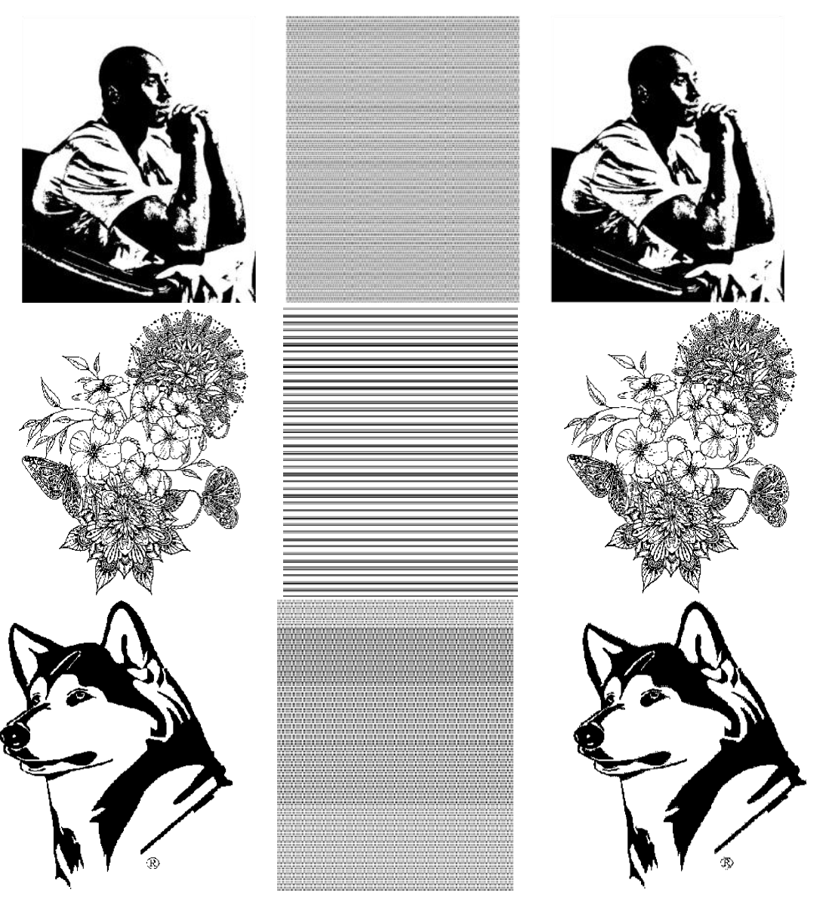

Jingxi Xu 许靖西
jxu at cs dot columbia dot edu
PhD Student,
Department of Computer Science
Member,
Robotic Manipulation and Mobility (ROAM) Lab
Columbia University
Member,
Robotics and Embodied Artificial Intelligence (REAL) Lab
Stanford University
I am a fifth-year Ph.D. in Computer Science at Columbia University, co-advised by Professor Matei Ciocarlie and Shuran Song. I received my bachelor’s degree from Edinburgh, with First Class Honours and Class Medal (overall grade ranks first in class), and I received an MS from Columbia, where I worked closely with Professor Peter Allen. I also spent some time as a research intern at Boston Dynamics AI Institute and as a visiting student at MIT (with Leslie Pack Kaelbling and Tomás Lozano-Pérez) and UPenn (with Dinesh Jayaraman and Nikolai Matni).
My research focuses are robotics, machine learning and healthcare. My most recent line of work [RA-L'24, IROS'24, ICRA'22] builds wearable assistive and rehabilitation robots that use machine learning to predict user intent from multimodal biosignals for people with disabilities. I also develop efficient exploration and manipulation policies with tactile sensing [preprint'24, ICRA'23, RA-L'22]. At the same time, I am a multifaceted roboticist with research experience in a variety of applications such as dynamic grasping [CASE'24, IROS'21], visual navigation [IROS'20], motion planning [CoRL'20], optimal control [L4DC'21], and brain-computer interface [ICRA'20].
Highlights
News
- [2024-06] The paper "Dynamic Grasing with a Learned Meta-Controller" got accepted to IEEE CASE 2024!
- [2023-08] Started my Phd journey at Duke!!
- [2023-02] I was granted the Master of Science Award of Excellence by Columbia University.
- [2022-11] The paper "Dynamic Grasping with a Learned Meta-Controller" won NeurIPs Registration Award at 5th Robot Learning Workshop of NeurIPs 2022.
- [2022-05] I joined Kodiak Robotics as a deep learning intern mentored by Dr. Collin Otis.
- [2022-05] I was honored as M.S. EE Honors Student at Columbia University!
- [2021-09] I started my master's study at Columbia University, majoring in Electrical Engineering - Data Driven Analysis and Computation.
- [2021-01] I received Rice ECE Future Star Scholarship!
- [2020-10] The paper "Path Planning with Autonomous Obstacle Avoidance..." got accepted to IEEE CNSC 2020.
- [2020-06] I graduated from Nanjing Normal University and honored as Outstanding Graduated Student (5%).
- [2020-01] The paper "An UAV Wireless Communication Noise Suppression Method..." got accepted to Radio Science.
- [2019-12] I joined Robot Learning and Control Group of Nanjing University as a research assistant.
- [2019-07] The paper "Study on the Influence of Electromagnetic Pulse..." got accepted to American Journal of Electrical and Electronic Engineering.
- [2019-06] The paper "Investigation on conducted EMI noise source..." got accepted to IET Power Electronics.
- [2018-12] I received the NARI Group Scholarship!
Publications
*: indicating equal contribution. You can also check my Google Scholar profile.
-
Conference on Robot Learning (CoRL) 2024
-
Preprint
-
Robot Learning Workshop at Neural Information Processing Systems (NeurIPS) 2022
IEEE International Conference on Automation Science and Engineering (CASE) 2024
🏆 NeurIPs Registration Award

-

-
 Investigation on conducted EMI noise source impedance extraction for electro magnetic compatibility based on SP-GA algorithmIET Power Electronics[Paper]
Investigation on conducted EMI noise source impedance extraction for electro magnetic compatibility based on SP-GA algorithmIET Power Electronics[Paper]
-
 Study on the Influence of Electromagnetic Pulse on UAV Communication LinkAmerican Journal of Electrical and Electronic Engineering[Paper]
Study on the Influence of Electromagnetic Pulse on UAV Communication LinkAmerican Journal of Electrical and Electronic Engineering[Paper]
Projects


- Adaptive grasp in dynamic environments (COMS6998-5 Robotic Learning Course Project) - advised by Professor Shuran Song
- Hierachical object detection (COMS6998-1 Representation Learning Course Project) - advised by Professor Carl Vondrick
- Learning the Predictability of the Future (EECS6691 Advanced Deep Learning Course Project) - advised by Professor Zoran Kostić
Teaching
Teaching assistant at Nanjing Normal University for:
- Microcomputer Principles and Interface Technology - Fall 2019
Talks
- Poster presentation at Northeast Robotics Colloquium (NERC) 2022 - October 8 · UMass Lowell
Lifestyle
I always enjoy my everyday life!